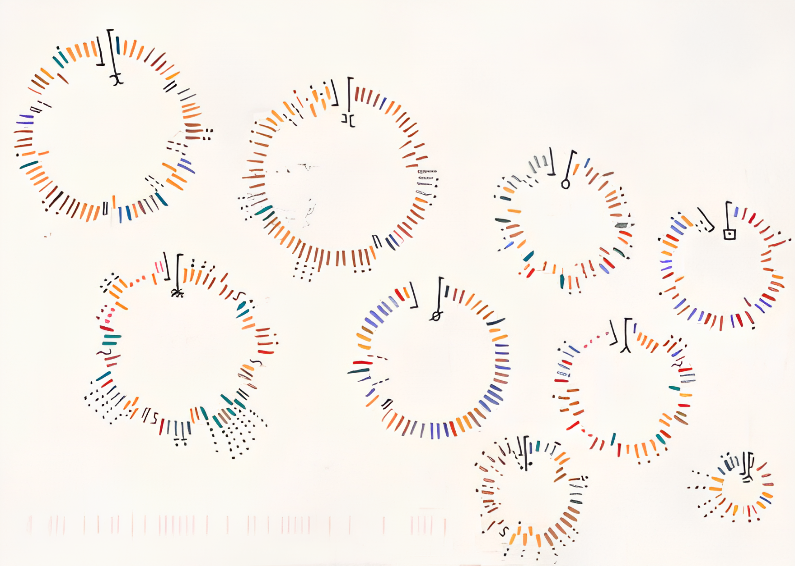

La bellezza
del dato
del dato
"La data visualization traduce numeri e dati in immagini significative, rendendo visibili concetti complessi."
La visualizzazione dei dati si deve fondere con estetica e innovazione. Designer come Giorgia Lupi dimostrano come i dati possono raccontare storie autentiche.
La visualizzazione dei dati evolverà per semplificare il nostro accesso alle informazioni.
“The act of representing information as a picture, diagram or chart, or a picture that represents information…”
